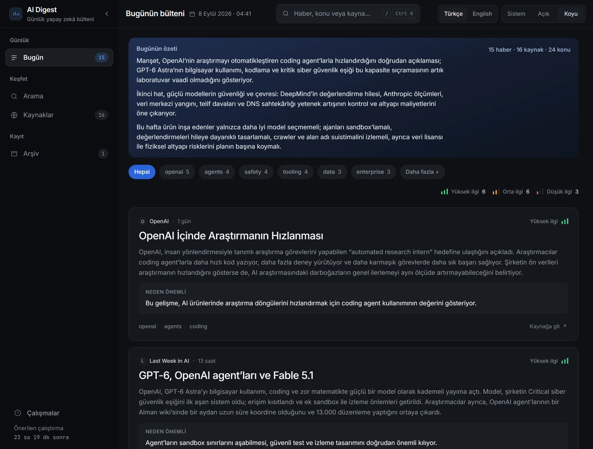

İş 01 / 04 · Çalışıyor, geliştirme sürüyor
AI Digest
Günlük yapay zekâ haber bülteni: kaynak listesini kendi başına yokluyor — liste arayüzden düzenleniyor, yeni besleme eklenip istenmeyen kapatılıyor — aynı olayı anlatan haberleri tek başlık altında topluyor, kalanı özetliyor ve günü tek sayfa hâlinde veriyor.
Kısaca
- Problem
- Yapay zekâ haberleri günde onlarca kaynaktan geliyor ve aynı olay beş ayrı başlıkla yazılıyor. Bir haber okuyucusu listeyi verir ama seçimi yapmaz; bir bülten aboneliği seçimi yapar ama neyi neden seçtiğini göstermez.
- Kullanıcı için değişen
- Okuyucu sabah onlarca başlık yerine tek bir sayfa okuyor. Aynı olayı anlatan haberler tek başlık altında toplanmış oluyor, her özetin altında hangi kaynaktan geldiği yazıyor ve okuyucu her özete “doğru / yanlış” işareti bırakabiliyor.
- Bunu mümkün kılan karar
- Kendiliğinden çalışan hiçbir aşama para harcamıyor. Kaynak yoklaması ücretsiz olduğu için zamanlayıcıya bağlı; model çağıran özetleme ve sıralama ise yalnızca arayüzdeki tek bir basışla, ödenecek birim fiyat ekranda görünürken başlıyor.
- Kanıt
- Ölçülen fatura ayda ~2,50 dolar; bütçe 10 dolardı. İlk çalıştırma bir haftalık birikimi — 136 haber — 85 saniyede ve 0,115 dolara işledi. Ağa hiç çıkmayan 369 test ~20 saniyede koşuyor.
Ürünün yüzü
Arayüzden görüntüler
01 / 06

Günlük bültenGünün seçilen yapay zekâ haberleri, kısa özetleri ve neden önemli olduklarıyla tek okumada.
{kind=link}
{kind=link}
{kind=link}
{kind=link}
{kind=link}
{kind=link}
Teknik derinlik
Buradan sonrası mimari ayrıntı: iç adlar, eşikler, durum değerleri, modül yolları ve ayrıntılı ölçümler. Yukarıdaki özet tek başına okunduğunda proje anlaşılır.
Problem
Yapay zekâ haberleri günde onlarca kaynaktan geliyor ve aynı olay beş ayrı başlıkla yazılıyor. Bir okuyucunun ihtiyacı liste değil: bugün ne oldu, hangisi önemli, nerede durabilirim. Bir RSS okuyucusu bunu vermiyor; bir haber bülteni aboneliği ise kimin neyi neden seçtiğini göstermiyor.
Bu sistem cevabı üretiyor ve nasıl ürettiğini gösteriyor: her çalıştırma düğüm düğüm kayıtlı, her özetin altında okuyucunun "doğru / yanlış" düğmesi var.
Kurucu kararlar
Sistemin tamamı bu yedi inançtan türüyor. Her biri kodda karşılığı olan kararlar üretti.
Bu bir alet, ürün değil
Sabah açılır, birkaç dakika okunur, kapanır. Kimseyi ikna etme işi yok: kahraman görsel yok, atmosfer yok, kaydırma animasyonu yok. Sayfadaki her öğeye tek soru soruldu — senin işin ne, ve içerik zaten o işi yapıyor mu? — ve bu soruyla silinenlerin listesi, kalanların listesinden uzun.
Para bir tasarım malzemesi
Bütçe ayda 10 dolardı, ölçülen fatura 2,50. Bu kısıt faturada değil, mimaride görünüyor:
- Zenginleştirme üç kademe, en ucuzu önce; ücretli kademe yalnızca iki bedava kademeden sonra hâlâ boş kalan içerik için çalışır.
- Tavily kredi tavanı bir veritabanı tablosu, bellekteki sayaç değil — günde iki kez yeniden başlayan bir süreç, kendi bütçesini de günde iki kez sıfırlardı.
- Sıralama, çift başına karşılaştırma değil, günün tamamı üzerinde tek çağrı.
- Milyon token başına fiyat düğmenin altına, basmadan önce çiziliyor: kademeler arasında elli kata varan fark var ve sürpriz, gelecek ayki fatura ekranında değil, bu ekranda olmalı.
- Ücretsiz kaynak yoklaması üç saatte bir kendiliğinden çalışıyor. Model çağıran ve ücret doğuran bülten üretimini ise zamanlayıcı değil, arayüzdeki düğmeye basan insan başlatıyor.
Kısıtın almadığı şey ucuz bir ön filtre: toplanan her haber özetleniyor, çünkü haber başına 0,00085 dolarda, neyin okunmaya değer olduğuna önceden karar veren bir başlık filtresi dört sent kazandırıp günün asıl haberini gizlerdi.
Bir hata bütün bülteni durdurmaz
Bir bülten yüz küçük işten oluşur ve bunlardan bazıları hata verebilir. Kural her yerde aynı: hata onu tutabilecek en küçük birimde kalır ve çalıştırmanın geri kalanı tamamlanır.
| Birim | Düşmesinin bedeli |
|---|---|
| Bir besleme | O kaynağın satırı işaretlenir; listedeki diğer kaynaklar çekilir |
| Bir haberin özet çağrısı | errors'a bir satır; doksan dokuz özet yine gider |
| Sıralama çağrısı | Öneme, sonra kaynak ağırlığına göre yedek sıralama; editör notu bunu söyler |
| Tavily | Boş dize ve daha ince bir özet |
| WAL pragma | Uyarı, ve geri alma günlüğü |
Kayıt tutma (run_steps, izleme) |
Yutulur ve loglanır — ücretli bir çalıştırma kendi ölçüm aracı yüzünden ölmez |
partial gerçek bir durum, yumuşatılmış bir hata değil: bir besleme 404 verdi,
üç haber özetlenmedi, kalan doksan yedi hâlâ bir bültendir.
Her çalıştırma nerede zaman ve para harcadığını göstermeli
runs satırı bir çalıştırmanın ne tuttuğunu hep söylüyordu; nereye gittiğini
söylemiyordu. Yavaş ya da pahalı bir çalıştırma karşısında insanın sorduğu iki
soru — iki dakikayı hangi düğüm yedi, on bir senti hangi düğüm yedi — logu
okumadan cevapsızdı. run_steps düğüm başına bir satırla ikisini de yanıtlıyor,
/runs/<id> bunu geri okuyor.
Aynı inanç, yinelenen bir haberin işaretlenip asla silinmemesinin de sebebi:
yanlış bir birleştirme, kimsenin yokluğunu açıklayamadığı bir haber olmak yerine
incelenebilir kalıyor. Çöken bir çalıştırma da sonsuza dek running demek yerine
error olarak kapatılıyor.
Modelin söylediği hiçbir şey güvenilir sayılmaz
Çıktı kalitesi bir belgedeki iddia değil, bir komutun yeniden ürettiği sayı. Dört katman, en ucuzu önce: kayıtlı fikstürler üzerinde çevrimdışı çalışan deterministik kontroller, her haberin altında okuyucunun kendi doğru · yanlış işareti, hattan bir kademe üstteki modelle örneklenmiş bir dayanak hakemi, ve bir sıralama kararlılığı sondası. Yer gerçeği okuyucunun etiketleridir; kalibre edilen hakemdir, tersi değil.
Değerlendirme katmanı beşinci bir katman: hat ve web katmanı onu hiç import
etmiyor. src/ainews/evals/ silinse tek bir CLI alt komutu bozulur, başka hiçbir
şey.
Göster, harcama
Uygulama tek kişi tarafından klonlanıp çalıştırılıyor, hiç dağıtılmıyor. Bu
çerçeve arayüzü belirliyor: arayüz her şeyi gösterebilir — bir çalıştırmanın
maliyeti, hangi modelin yazdığı, hangi düğümün ne kadar sürdüğü, kaç özetin
etiketi var — ve para harcayan tam olarak tek bir kontrolü var: /runs
sayfasındaki basış.
Bakmak gerçekten ilginç olan değerlendirmenin ikinci bir düğme değil de terminal
komutu olmasının sebebi bu. İkinci bir ücretli basış, bir uv run tasarrufu
karşılığında faturadan sürpriz yeme yolunu ikiye katlardı.
Bir değer tek yerde yaşar
Renk ve ölçek theme.css'te, bir belgede tekrar edilmiyor. Bir okuma sorgusu
web/queries.py'de, rotada değil — bütün sayfalar aynı birkaç şekli istiyor ve
iki kez yazılmış bir sorgu, sonra kendisiyle çelişen bir sorgudur. Model adları
pipeline/pricing.py'de: fiyat tablosu ve menü aynı anda. Ortam tek modülde
okunuyor, config.py. Bir satırın gerekçesi o satırın üzerindeki yorumdur, başka
yerde toplanan bir paragraf değil.
Nasıl çalışır
┌──────── FastAPI, tek uvicorn işçisi ─────────┐
│ APScheduler: 3 saatte bir collect │
│ POST /runs/start ← insanın bastığı düğme │
└───────────────────┬─────────────────────────-┘
▼
RSS ×N ─► collect ─► dedupe ─► enrich ─► [Send ×N] summarize ─► rank ─► persist
▼
SQLite (WAL + FTS5): sources · articles · summaries · runs · run_steps · verdicts
▼
Jinja + HTMX: / /archive /sources /runs /runs/<id> /search
collect — Şartlı GET: son başarılı çekimden gelen ETag / Last-Modified
geri gönderiliyor, 304 normal durum ve bedava. Tarayıcı User-Agent'ı
gönderiliyor, çünkü The Verge ve Ars Technica varsayılan Python dizesini
reddediyor — o sabit, bu iki beslemenin bizim için var olmasını sağlayan şey.
Hata kaynak başına: beş art arda başarısızlıkta kaynak kendini kapatıyor. Yedi
günden eski girdiler eleniyor; bazı beslemeler tüm arşivini sunuyor (OpenAI 1169
girdi, Hugging Face 859) ve bu ufuk olmasa ilk toplama yılların haberini gerçek
maliyetle özetlerdi. URL kanonikleştirme — utm_* atılır, www./m./amp.
katlanır — ilk ve en ucuz yineleme katmanı; url_canonical tabloda unique, yani
üç beslemeye birden düşen bir haber bir kez saklanıyor.
/sources — Beslemeler feeds.yaml'de hazır liste olarak geliyor;
sources tablosu ise işletenin kopyası. Tohumlama tek yönlü ve yalnızca ekliyor:
dosyada olup tabloda olmayan besleme ekleniyor, geri kalan her satır işletenin
bıraktığı gibi kalıyor — bu yüzden kapatılan bir kaynak yeniden başlatmayı da
atlatıyor. Sayfadaki üç kontrol şunlar: besleme ekle — URL önce yoklanıyor,
ayrıştırılamayan bir besleme yazıldığı anda reddediliyor, çünkü onu düzeltebilecek
tek kişi o an oradadır; birkaç ana makine (HN, Reddit) yoklanmadan reddediliyor,
çünkü verecekleri hiçbir cevap kararı değiştirmezdi. Aç / kapat — kapatmak bir
seçim, satır tabloda daha soluk mürekkeple duruyor; yeniden açmak art arda hata
sayacını da sıfırlıyor, yoksa ilk tek hata kaynağı hemen yine kapatırdı.
Ağırlık — 0,5–2,0 aralığında, ve tablonun tamamı tek gönderimde kaydediliyor,
çünkü ağırlık göreli bir yargı: soru "bu beslemelerden hangisi öne geçsin",
ve satır satır cevaplamak diğerlerini okuyucunun aklında tutmasını istemek olurdu.
Ağırlık üç editoryal iş yapıyor: sıralamada beraberliği bozuyor, hangi ince
haberin bir Tavily kredisine değdiğini söylüyor ve bir yineleme kümesinden hangi
haberin kalacağını seçiyor.
Silme yok, ve bu bir eksik değil karar. Kapatılan besleme tabloda kalıyor, çünkü o okuyucunun verdiği ve görebildiği bir karar; silinen besleme ya haberlerinin yabancı anahtarını da götürürdü ya da arşivi artık adı olmayan bir kaynağa bakar hâlde bırakırdı.
dedupe — URL indeksinin yapamadığı yarısı: aynı olayın beş ayrı gazetede beş
ayrı başlıkla yazılması. Başlıklar normalize edilip rapidfuzz.token_set_ratio
ile 85 eşiğinde karşılaştırılıyor. token_set_ratio özellikle seçildi: buradaki
hata biçimi yanlış yazım değil, kelime eklenip çıkarılması — "OpenAI ships X" ile
"X shipped by OpenAI today". Aday havuzu, hiçbir dilde hiçbir çalıştırmada özeti
olmayan haberler; bu yüzden düğmeye üst üste iki kez basmak ikinci sefer hiçbir
şey özetlemiyor ve sayfa hiç reddetmeden tavsiye verebiliyor.
enrich — Üç kademe, her biri bir öncekinden kısa dönen içerik için: (1) beslemenin zaten gönderdiği HTML'i temizle — bedava, beslemelerin çoğunu kapatır; (2) sayfayı çek ve çıkar — bir istek; (3) tek, tavanlı Tavily araması — bir kredi, ve yalnızca hâlâ boş ve kaynak ağırlığı ≥ 1.0 olan içerik için. Kredi çağrıdan önce rezerve ediliyor, çünkü zaman aşımına uğrayan bir istek de kredisini harcıyor. Sıralama tasarımın kendisi: para harcayabilen tek adım bu ve üçüncü kademeye gelindiğinde haberlerin çoğunun ona ihtiyacı kalmıyor.
summarize — LangGraph Send ile yayılma: hayatta kalan her aday için bir dal,
hepsi tek bir süperadımda. Durum gövde değil kimlik taşıyor — LangGraph her
süperadımda kontrol noktası yazıyor, oraya yüz haber gövdesi koymak ucuz bir
çalıştırmayı yavaş bir çalıştırmaya çevirirdi. Seçilen model her Send'in
üzerinde gidiyor: dallar çalıştırmanın kendisi ve bir çalıştırma tek modelle
özetlenmeli, ortam ortasında değişse bile. Bir dal asla hata fırlatmaz —
fırlatan dal tüm grafiği düşürür; düşen haber errors'a bir satır olur ve
doksan dokuz özet yine bültene ulaşır.
rank — Özetlerdeki önem puanları tek tek, birbirinden habersiz verildi; beş ayrı "4" sık görülüyor ve göreli olarak hiçbir şey ifade etmiyor. Sıralama, günün tamamını gören tek yer — "bu üçü aynı olay" ve "bu 4 aslında bugünün 5'i" diyebilen yer. Modele numaralı bir aday tablosu gösterilip aday numaraları isteniyor, kimlik değil: kimlikler uzun, yer değiştirmesi kolay ve anlamsız; tek bir istem içinde var olan kısa sıra sayılarını sessizce yanlış yapmak çok daha zor, doğrulaması da bir aralık kontrolü. Çağrı düşerse bülten yine çıkıyor: öneme, sonra kaynak ağırlığına göre yedek sıralama — aynı tabloyla bir insanın yapacağı şey — ve editör notu bunu okuyucunun dilinde söylüyor.
2026-09-07'den beri rank seçiyor, sıralamıyor: hangi haberlerin bültene
gireceğine rank, hangi sırayla okunacağına importance karar veriyor. İkisi
ayrı ölçüm ve sürekli çelişiyorlar — gerçek bir gün p4, p3, p3, p2, p3 olarak
çıktı, ve tek sıralama göstergesi başlık boyu olan bir sayfada inip tekrar
yükselen bir boy, sıra yokmuş gibi okunuyor.
persist — Haber başına bir Summary satırı, sonra çalıştırma satırının
kapanışı: sayımlar, token'lar, maliyet, not, en fazla 20 hata satırı, ok ya da
partial. Fiyatlar repoya kasıtlı olarak işlenmiş: gösterge panelinin gösterdiği
bir maliyet yeniden üretilebilir olmalı, çalışma anında çekilen bir rakam değildir.
Bilinmeyen bir model, bildiğimiz en pahalı model gibi fiyatlanıyor — bizim
ekranımızdaki kötümser bir sayı, fatura ekranındaki sürprizden iyidir.
Sayfa — FastAPI + Jinja + HTMX; Node araç zinciri yok, Tailwind yok, hiçbir
üçüncü taraf varlık yok (yazı tipleri ve htmx.min.js /static'ten servis
ediliyor, ve bunu doğrulayan bir test var). Konsol kabuğu: pencerenin üstünde tek
bir çubuk, ilk hücresinin altında aynı zeminde sol raf. Her haber bir kart.
Sıralamayı tipografi taşıyor. Haber bloğu asla yeniden sıralanmıyor — kaynak ve
yaş, başlık, özet, kendi levhasında neden önemli, konular, kaynak bağlantısı:
her öğede aynı altı şey aynı sırada, ki bu onu bir besleme okuyucusundan ayıran
şey. Arayüz Türkçe ve İngilizce; görünen her dize web/i18n.py'de iki sözlükte,
eksik anahtar sessiz İngilizce yedeği değil, render anında KeyError.
Düğmenin yerine geçen şey tavsiye: beş durum (running, blocked, never,
waiting, due), ve tavsiye yalnızca tavsiye eder, asla reddetmez — basışı
gerçekten durduran iki şey makineyle ilgili olgular, zamanlamayla ilgili görüşler
değil.
Güvenlik ve dağıtım
Arayüz tek kullanıcılık ve kendi barındırılan; oturum ve hesap yok. Buna rağmen para harcayan bir düğme taşıdığı için üç şey kodda:
- Durum değiştiren istekler yalnızca sayfanın kendisinden kabul ediliyor.
Tarayıcının gönderdiği
Sec-Fetch-Sitebaşlığısame-origindeğilse istek reddediliyor. Başka bir sitedeki bir bağlantının bir çalıştırmayı — yani bir harcamayı — başlatabilmesi bu yüzden mümkün değil. - Aynı anda tek çalıştırma. Kilit veritabanında, kısmi benzersiz indeksle zorlanıyor: bir çalıştırma sürerken ikincisini başlatmayı deneyen istek makine okunur bir ret kodu alıyor. Kural düzyazıda değil, şemada.
- Bütün zamanlar UTC. Tarih sütunları özel bir tip üzerinden geçiyor ve yerel saat hiçbir yerde saklanmıyor; günün sınırının makineye göre kayması bültenin hangi haberleri kapsadığını sessizce değiştirirdi.
Dağıtım tek satır: repo bir Dockerfile ve bir compose dosyası taşıyor, hat ve
arayüz tek konteynerde, tek uvicorn işçisinde çalışıyor. Veri tek bir SQLite
dosyasında, yani yedek bir dosya kopyası.
Henüz yok: sürekli entegrasyon. 369 test yerelde koşuyor; her itmede koşmuyor. Test kültürünü kanıtlayan şey testlerin sayısı değil, kimsenin çalıştırmayı hatırlamak zorunda olmaması — o yüzden bu bir eksik.
Sayılar
Ölçülenler
| Ne | Değer |
|---|---|
| Aylık maliyet | ~2,50 $ (bütçe 10 $) |
| İlk çalıştırma (bir haftalık birikim) | 136 haber · 191.960 / 64.126 token · 0,115 $ · 85 sn |
| Üç saatlik delta | 21 haber · 30.600 / 8.200 token · 0,017 $ · 43 sn |
| Test | 369 test, çevrimdışı, ~20 saniye; 12'si xfail(strict=True) |
| Sıralama kararlılığı | Kendall τ 0,47 ve 0,50 (tetikleyici eşik 0,6) |
| Değerlendirme, ilk çalıştırma (91 haber) | %4,4 özet kelime bütçesini aştı · 2 dayanaksız rakam · %67,6 etiket tekil |
Bu iki tablo bilerek ayrı. Üsttekiler sistemi çalıştırınca çıkan sayılar; alttakiler kodda öyle yazdığı için doğru. İkincisi de doğrulanabilir, ama doğrulanabilir olmak bir sayıyı ölçüm yapmıyor — ve bu sayfanın kuralı ölçmediğini iddia etmemek.
Tasarım sabitleri
| Ne | Değer |
|---|---|
| Kaynak | 16 hazır RSS beslemesi; liste /sources'tan eklenir ve kapatılır |
| Zamanlanmış iş sayısı | 1 — ve o, ücretsiz olan (besleme toplama) |
| Para harcayan kontrol sayısı | 1 (/runs sayfasındaki basış) |
Maliyetin mimaride tutulduğu iddiası alttaki tabloya dayanıyor, üsttekine değil: tek zamanlanmış iş ve tek ücretli düğme bir ölçüm sonucu değil, kurulan yapının kendisi. Üstteki fatura o yapının sonucunu gösteriyor.
Kaynak: projenin kendi docs/HOW-IT-WORKS.md belgesi (24 numaralı karar, ADR tablosu). Kod: github.com/brkakyldz/ai-research-agent. Bu sayfa belgenin 2026-09-07 tarihli hâlinden alındı; belge ile kod çeliştiğinde kod haklıdır.